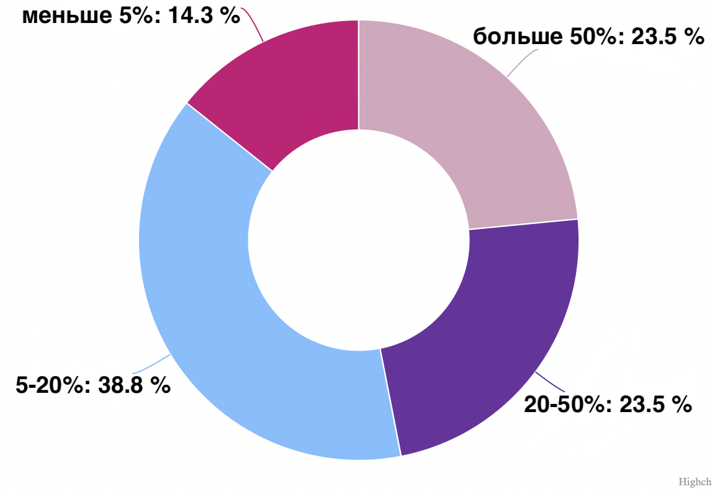

Бизнес-барометр
В течение месяца наша команда проводила опрос среди стартаперов и инвесторов. В общей сложности нам удалось связаться с 20 инвесторами и 60 стартаперами! Всем спасибо, кто поучаствовал в этом исследовании. На основе собранных данных наши аналитики составили сравнение мышления стартапера и инвестора, чтобы помочь обеим сторонам лучше понять друг друга!
Секрет успешного стартапа по мнению инвестора и фаундера
Некоторые фаундеры считают, что залог успеха - большие вложения на ранних этапах, с чем не согласны инвесторы. Для них более важным является развивающийся рынок и технология. Отрасль, как главный секрет успеха, отмечают преобладающее число инвесторов, но меньшая часть стартаперов ставит на это. Зато и стартаперы, и инвесторы сходятся во мнении, что идея, команда и сам лидер – основные отличительные черты успешного стартапа от неуспешного!
 Команда Forise согласна с тем, что без идеи невозможно будет захватить рынок и найти ту самую килер-фичу, которая будет отличать вас от конкурентов. Но все же главная сила – это люди, они основные двигатели прогресса. Ведь именно команда занимается разработкой идеи, внедрением и продвижением. Без нее не было бы и самого продукта! Поэтому именно симбиоз этих 2-х главных факторов приведет стартап к успеху.
Команда Forise согласна с тем, что без идеи невозможно будет захватить рынок и найти ту самую килер-фичу, которая будет отличать вас от конкурентов. Но все же главная сила – это люди, они основные двигатели прогресса. Ведь именно команда занимается разработкой идеи, внедрением и продвижением. Без нее не было бы и самого продукта! Поэтому именно симбиоз этих 2-х главных факторов приведет стартап к успеху.
Идея сама по себе ничего не стоит
- Александр Галицкий, венчурный инвестор, технологический предприниматель, Основатель и президент компании «ЭЛВИС-ПЛЮС», основатель и управляющий партнёр фонда Almaz Capital Partners
Боятся ли стартаперы развивать свой бизнес, а инвесторы вкладываться в стартапы?
По натуре, как стартаперы, так и инвесторы люди рискованные. Главными факторами для них являются действие и результат. Что касается трудностей, ограничений, то для одних это беда, а для других, более предприимчивых – польза.

 Из графика видно, что стартаперы немного больше инвесторов переживают за успешность бизнеса. Об этом говорят цифры о готовности развивать и вкладывать - 68,8% со стороны стартаперов и 77,8% - со стороны инвесторов. Среди поводов для переживания стартаперы отмечают: нестабильность экономики, трудности с логистикой, страх ненужности стартапа, страх не привлечь инвестиции. А инвесторы – непредсказуемость ситуации, динамичность изменений, отсутствие крупного сотрудничества за рубежом. Тем не менее цифры отражают высокую готовность развивать проекты. Поэтому если хотите начать – будьте смелее. Пока некоторые ждут возвращения к привычной жизни, обгоните их, пока они не развили ваши идеи!
Наши ожидания
Честно, думали, что инвесторы будут бояться вкладываться из-за политической и экономической ситуации, и тех, кто захочет рисковать, будет ~ 20%. Но результаты нас поразили.
Из графика видно, что стартаперы немного больше инвесторов переживают за успешность бизнеса. Об этом говорят цифры о готовности развивать и вкладывать - 68,8% со стороны стартаперов и 77,8% - со стороны инвесторов. Среди поводов для переживания стартаперы отмечают: нестабильность экономики, трудности с логистикой, страх ненужности стартапа, страх не привлечь инвестиции. А инвесторы – непредсказуемость ситуации, динамичность изменений, отсутствие крупного сотрудничества за рубежом. Тем не менее цифры отражают высокую готовность развивать проекты. Поэтому если хотите начать – будьте смелее. Пока некоторые ждут возвращения к привычной жизни, обгоните их, пока они не развили ваши идеи!
Наши ожидания
Честно, думали, что инвесторы будут бояться вкладываться из-за политической и экономической ситуации, и тех, кто захочет рисковать, будет ~ 20%. Но результаты нас поразили.
Где стартаперы ищут инвесторов, а инвесторы ищут стартаперов?
Судя по ответам инвесторов, большинство из них предпочитает использовать онлайн-ресурсы для поиска подходящих проектов! Некоторые инвесторы поделились, что с целью поиска нового “единорога”, они даже создают целую группу аналитиков. Но все мы понимаем, что на такой метод поиска стартапа уходит много средств, а самое главное - времени.
Тем временем стартаперы пытаются привлечь инвестиции на акселераторах и питч-сессиях. Из минусов стартаперы отметили взносы за участие и трату большого количества времени.
Значит основная проблема в этих инструментах — это необходимость тратить на поиски слишком много времени! А почему это происходит? Верно! - нехватка качественных и перспективных стартапов!
Трудности у стартаперов при взаимодействии с инвесторами и у инвесторов при взаимодействии со стартаперами
Никто не любит сложных жизненных ситуаций, но они случаются, это неизбежно. Так и взаимодействие между стартаперами и инвесторами не является исключением.

 По статистике большинство стартаперов не испытывают никаких трудностей. Интересно, это их излишняя уверенность в себе, или инвесторы реально демонстрируют себя идеальными?
Но основной из отмеченных трудностей является страх быть непонятым. Подготовьте и заранее отработайте lift speech и его более подробную версию. Посещайте конференции и питч-сессии, это поможет вам набраться опыта в презентации своей идеи и общении с разными бизнесовыми людьми.
Инвесторы гораздо чаще сталкиваются со сложностями во взаимодействии со стартаперами. Эти люди отбрасывают эмоции и зрят в корень проекта и самого фаундера. Поэтому они сразу замечают желание стартаперов получить все и сразу, плохие экономические расчёты и отсутствие плана развития у стартапа. Именно эти моменты они считают основными трудностями!
Команда Forise считает, что все будет, но не сразу. Труд всегда награждается, просто нужно идти вперёд, верить в себя и свою идею, и тогда вы всего добьётесь!
По статистике большинство стартаперов не испытывают никаких трудностей. Интересно, это их излишняя уверенность в себе, или инвесторы реально демонстрируют себя идеальными?
Но основной из отмеченных трудностей является страх быть непонятым. Подготовьте и заранее отработайте lift speech и его более подробную версию. Посещайте конференции и питч-сессии, это поможет вам набраться опыта в презентации своей идеи и общении с разными бизнесовыми людьми.
Инвесторы гораздо чаще сталкиваются со сложностями во взаимодействии со стартаперами. Эти люди отбрасывают эмоции и зрят в корень проекта и самого фаундера. Поэтому они сразу замечают желание стартаперов получить все и сразу, плохие экономические расчёты и отсутствие плана развития у стартапа. Именно эти моменты они считают основными трудностями!
Команда Forise считает, что все будет, но не сразу. Труд всегда награждается, просто нужно идти вперёд, верить в себя и свою идею, и тогда вы всего добьётесь!
Какую долю готовы продать стартаперы, и сколько готовы купить инвесторы?
Судя по графику стартаперов, они разделились на два лагеря: первые не готовы "делиться властью" с инвестором, поэтому и готовы продать не более 30%. Вторые наоборот - готовы продать побольше, чтобы ускорить темпы развития дела.

 Оба подхода неплохи, каждому своё, но наша задача, как исследователей, найти точный диапазон процентов. Поэтому давайте посмотрим на график инвесторов.
Чаще всего инвесторы предпочитают иметь «среднее» влияние на компанию: от 15 до 30%. Но нужно понимать, что привлекать следует не одного инвестора! Поэтому, чтобы «сохранить власть», Forise рекомендует продавать нескольким инвесторам долю от 20 до 60%, а одному инвестору около 10–30%.
Оба подхода неплохи, каждому своё, но наша задача, как исследователей, найти точный диапазон процентов. Поэтому давайте посмотрим на график инвесторов.
Чаще всего инвесторы предпочитают иметь «среднее» влияние на компанию: от 15 до 30%. Но нужно понимать, что привлекать следует не одного инвестора! Поэтому, чтобы «сохранить власть», Forise рекомендует продавать нескольким инвесторам долю от 20 до 60%, а одному инвестору около 10–30%.
Сколько вложили инвесторы? Сколько получил один стартап?
В 50% случаев инвесторы используют дифференцированный способ инвестирования – инвестируют крупные суммы, но в несколько стартапов. Это хороший способ, так как помогает снизить риски потери абсолютно всех средств. Ведь, как мы знаем, один удачный стартап стоит 9 провалившихся.

 Лишь в 33% случаев инвесторы вкладываются крупно, но только в один стартап. Чаще всего это происходит на более поздних стадиях инвестирования, когда стартап начал крупно расти.
В 17% случаев инвесторы вкладываются совсем мало. Тут 2 варианта: либо на реализацию много средств не требуется, либо инвестор предпочёл иметь минимальное влияние на компанию.
Лишь в 33% случаев инвесторы вкладываются крупно, но только в один стартап. Чаще всего это происходит на более поздних стадиях инвестирования, когда стартап начал крупно расти.
В 17% случаев инвесторы вкладываются совсем мало. Тут 2 варианта: либо на реализацию много средств не требуется, либо инвестор предпочёл иметь минимальное влияние на компанию.
Когда нужны деньги стартаперам? Когда вкладываются инвесторы?
Как показал наш опрос, 56 стартаперам из 60 нужны инвестиции для старта бизнеса. Это говорит нам о том, что стартаперы ищут инвестора на посевных стадиях (pre-seed и seed).
 Большинство же инвесторов готовы вложиться на стадиях seed (41%) и round A и дальше (34.5%). Это говорит нам о том, что инвесторы не готовы вложиться на этапе идеи и команды, им нужен хотя бы готовый прототип и подтверждение гипотезы!
Большинство же инвесторов готовы вложиться на стадиях seed (41%) и round A и дальше (34.5%). Это говорит нам о том, что инвесторы не готовы вложиться на этапе идеи и команды, им нужен хотя бы готовый прототип и подтверждение гипотезы!
Перспективные отрасли
Тут и инвесторы, и стартаперы сошлись во мнении, что на сегодняшний день самой перспективной отраслью является IT.
 Теперь о различиях. В отличие от стартаперов, инвесторы не считают EduTech одной из самый перспективных отраслей, так как рынок уже переполнен всевозможными онлайн-школами и курсами, а значит создать что-то уникальное и прорывное практически невозможно.
По мнению инвесторов, перспективными отраслями, помимо IT, являются: сфера услуг и FoodTech. Рекомендуем присмотреться к идеям в этих отраслях!
Теперь о различиях. В отличие от стартаперов, инвесторы не считают EduTech одной из самый перспективных отраслей, так как рынок уже переполнен всевозможными онлайн-школами и курсами, а значит создать что-то уникальное и прорывное практически невозможно.
По мнению инвесторов, перспективными отраслями, помимо IT, являются: сфера услуг и FoodTech. Рекомендуем присмотреться к идеям в этих отраслях!
В качестве результата исследования мы составили сводку кратких советов для начинающих
стартаперов, которые помогут им быстрее привлечь инвесторов!
Пункт 1. Познакомьте инвестора с командой!
Как мы упоминали ранее, на посевных стадиях инвестор вкладывается не столько в идею, сколько в команду, поэтому очень важно, чтобы инвестор видел людей, которые стоят за стартапом.
Пункт 2. Умейте адаптироваться к изменениям!
Так как сейчас экономика очень нестабильна, просто невозможно строить долгосрочные планы. Именно поэтому важно уметь вовремя чуть переделать концепцию, а не продолжать биться головой об стену.
Пункт 3. Расскажите о себе миру!
Очень важно показывать процесс создания стартапа. Например, мы в Forise специально и создали ТГ-канал для этих целей!
Пункт 4. Позвольте инвесторам владеть от 20 до 60% компании!
Этап финансирования очень сложен для каждого стартапа. Это не только получение инвестиций, но и возложение на себя огромной ответственности. Поэтому, чтобы не только получить немалую сумму от инвесторов, но и сохранить власть, мы рекомендуем именно эти проценты.
Пункт 5. Не ждите миллионов через месяц
Всё будет, но постепенно!
Пункт 6. Чётко формулируйте вашу идею!
Если ваш концепт понимаете вы, это не значит, что и инвестор поймёт его тоже. Объясняйте максимально понятным языком, без заумных терминов.
Пункт 7. Ищите несколько источников инвестиций для вашего стартапа!
И денег получите больше, и один из источников потерять будет не столь критично.
Пункт 8. Прежде чем идти к инвестору, найдите подтверждение перспективности вашей идеи!
Это может быть протестированный продукт, анализ рынка или даже первые клиенты!
Пункт 9. Примите помощь от государства!
Поинтересуйтесь, как в вашем регионе поддерживают малый бизнес. Вам помогут с документами и даже с подбором необходимого вам гранта! Наша команда обращалась к центру “Мой бизнес” города Калуги, где нам помогли начать наше дело!
Пункт 10. Не лучше, а иначе!
Ошибка, которую совершают многие новички: стараются переплюнуть крупных конкурентов. А что, если вместо этого, постараться увидеть другой подход к делу?
Вот и всё, наш бизнес-барометр подошёл к концу! Сохраняйте себе наши выводы и пользуйтесь ими! ❤
Над барометром работали
Полина Кобцева (CEO Forise)
Валерия Беспалова (Аналитик данных)
Александра Синолицына (Глава маркетингового отдела в Forise)